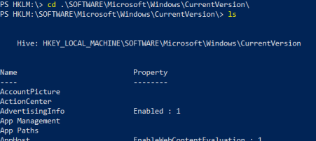

Set-Location (cd)
Set-Location
With Powershell we can also access to Windows Registry hives
PS> Set-Location HKLM:\
from here we can easily navigate into areas of our interest
example
PS> cd .\SOFTWARE\Microsoft\Windows\CurrentVersion\
PS> ls
